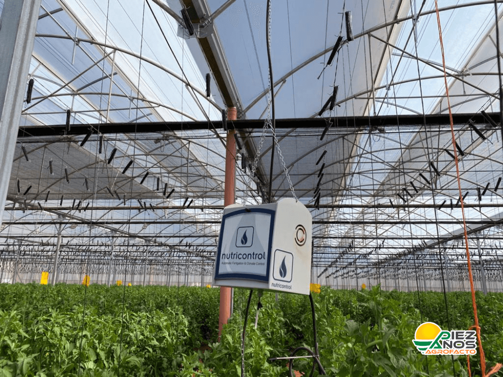
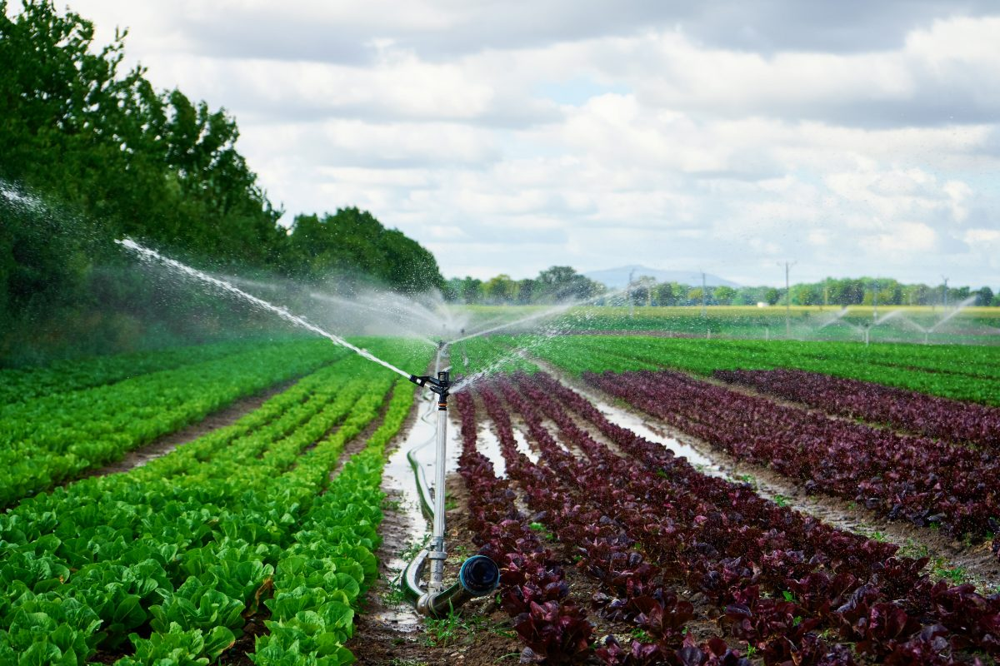

Invernaderos Automatizados
El Invernadero Automatizado Inteligente permite controlar de forma remota y automática las condiciones climáticas internas, optimizando la producción agrícola. Está equipado con sensores de humedad del suelo, temperatura y humedad ambiental, un sistema de riego automatizado, ventilación inteligente con calo-ventores y una app móvil desde la cual se puede monitorear y controlar todo el sistema en tiempo real. Además, cuenta con alertas automáticas ante fallas o anomalías. Funciona con energía eléctrica o paneles solares y se adapta a distintas dimensiones según la necesidad del cliente. Es una solución eficiente, sustentable y pensada para el agricultor moderno.
Mayor productividad: Controlando variables como temperatura, humedad, CO₂ y luz, se optimizan las condiciones de cultivo, lo que permite producir más en menos espacio y durante todo el año
Menor dependencia climática: Se reduce el riesgo asociado a eventos climáticos extremos (heladas, sequías, granizo).
Uso eficiente de insumos: Los sensores y sistemas inteligentes aplican nutrientes y pesticidas solo cuando y donde se necesitan, reduciendo el uso excesivo.
Reducción de mano de obra: Al automatizar tareas como el riego, ventilación o iluminación, se reduce la necesidad de intervención humana.
Cultivos de mayor calidad: El control ambiental preciso mejora la uniformidad y calidad de los productos.

Sistema de riego por goteo
El Sistema de Riego Automatizado permite gestionar el riego de cultivos de forma precisa, eficiente y sin intervención manual. Utiliza sensores de humedad del suelo para detectar el nivel de agua necesario y acciona el riego automáticamente solo cuando es requerido, evitando el desperdicio. Puede controlarse de forma remota a través de una app móvil, permite configurar horarios o condiciones de riego, y se adapta a diferentes tipos de cultivos. Funciona con energía eléctrica o solar y es ideal para optimizar recursos hídricos, mejorar la salud de las plantas y reducir costos operativos.
Ahorro de agua: Utilizan sensores de humedad del suelo y clima para regar solo cuando es necesario, evitando el desperdicio.
Mayor eficiencia energética: Al optimizar horarios y cantidades de riego, se reduce el consumo energético vinculado al bombeo de agua.
Reducción de costos operativos: Menor necesidad de supervisión manual del riego.
Mejor salud de las plantas: El riego preciso reduce enfermedades por exceso de humedad o estrés hídrico.
Adaptabilidad al cambio climático: Permite responder rápidamente a condiciones cambiantes del suelo o el clima.
